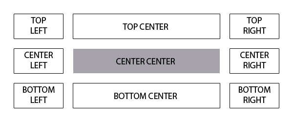

What is InteliDate?
InteliDate is a jQuery plugin for use with date inputs. InteliDate allow the user to enter a date in the format they are comfortable with and it will interpret it and read it back to them in long format as they type to confirm it understood them. Once the user has completed entering their date and exit the field InteliDate will automatically convert the user's input to the developer's defined format for submission.
Why InteliDate?
Date input and validation has many approaches and has gotten much easier with HTML5's date type and native controls. However, the native controls are all different and have their own quirks. The two primary controls being a calendar widget such as in Chrome, or a 3 wheeled spinner such as on a mobile device. Both of these techniques work great for near-time dates such as scheduling a reservation for the near future. But neither of them is great for far-time dates such as birthdays or anniversaries as the user ends up scrolling or clicking to go back at minimum 13 years but potentially over 90 years. For these types of dates many developers have opted to either force a format and hope the user's follow directions, or split the field into 3 to define month day and year separately. Forcing a format can lead to user confusion and frustration (mostly because they just don't read the directions), while splitting the input leads to yet more validation issues as well as now having 3 fields to post and store instead of 1.
With InteliDate you get the best of both worlds. The user is unrestricted on format with immediate feedback as to if their date was correctly understood and you can validate and store 1 field in the format you require.
Demo
Try some formats you can think of: ISO (yyyy-MM-dd), US Civilian vernacular (MM/dd/yy or MM/dd/yyyy; try it with different delimiters too!), Long form (Saturday, January 1st 2015; try it in Polish, Styczeń 1 2015, or any language your have defined in your browser settings)
Does not currently understand European standard (dd/MM/yy or dd/MM/yyyy) as it is difficult to distinguish dates of the 12th or below.
Documentation
Quick Use
Make sure you have the jQuery library and intelidate.js loaded.
To use InteliDate with the default settings on all date fields all you need to do is initialize intelidate like so:
$('input[type=date]').intelidate();Configuration
| Property | Default | Description |
|---|---|---|
| evtSet | 'focus keyup change' | input event to set/update readout |
| formatOutput | 'yyyy-MM-dd' | Date format to replace the user's input |
| invalidClass | 'invalid' | Class to apply to input and readout on invalid date |
| hideRO | true | Hide Readout after set time |
| showRO | true | Re-display readout on input focus |
| ROformat | 'dddd, MMM d-S yyyy' | Date format to read out to the user next to the input |
| ROclass | 'dateReadout' | Readout container class |
| ROoffset | {left: 0, top: 0} | Readout offset from input |
| ROposition | 'bottom-center' | Readout position relative to input |
| ROscale | 1 | Readout font size difference in ems |
| ROalign | 'left' | Readout text alignment |
| ROanimate | 500 | speed of animation |
| ROtimeout | 4000 | Time in milliseconds before hiding Readout |
| locale | ['en'] | Array of locales to read and/or write date formats |
| ROlocale | 'en' | Readout localization. Accepts locale string or "user" to default to user's browser settings |
Read Out Positioning
The read out position is specified by three configuration properties: ROposition, ROoffset, and ROalign. The ROposition property specifies the position in relation to the input field. for example a value of 'bottom-center' will place the read out directly below the input. The following image illustrates the "slots" that you can use.
The ROoffset property fine tunes the read out's position specified with the ROposition property. The ROalign property sets the text alignment of the readout, the effects of which are most notable when the horizontal ROposition is set to center.